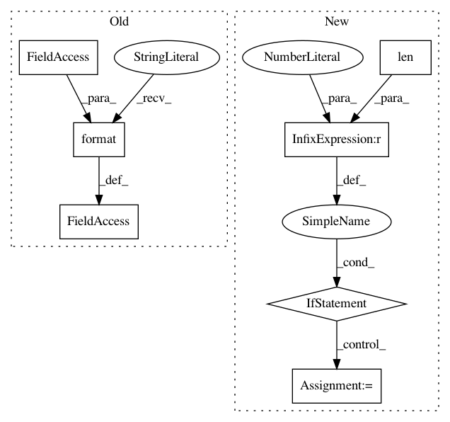

023331ec2a7b0086abfc81eca16c84a1692ee653,keras/layers/convolutional.py,Convolution1D,build,#Convolution1D#Any#,127
Before Change
regularizer=self.W_regularizer,
constraint=self.W_constraint)
if self.bias:
self.b = self.add_weight((self.nb_filter,),
initializer="zero",
name="{}_b".format(self.name),
regularizer=self.b_regularizer,
constraint=self.b_constraint)
else:
After Change
self.input_spec = [InputSpec(ndim=4)]
def build(self, input_shape):
if len(input_shape) != 4:
raise ValueError("Inputs should have rank " +
str(4) +
"Received input shape:", str(input_shape))
if self.data_format == "channels_first":
channel_axis = 1
else:
channel_axis = -1
if input_shape[channel_axis] is None:
raise ValueError("The channel dimension of the inputs "
"should be defined. Found `None`.")
input_dim = input_shape[channel_axis]
In pattern: SUPERPATTERN
Frequency: 4
Non-data size: 7
Instances
Project Name: keras-team/keras
Commit Name: 023331ec2a7b0086abfc81eca16c84a1692ee653
Time: 2017-02-09
Author: francois.chollet@gmail.com
File Name: keras/layers/convolutional.py
Class Name: Convolution1D
Method Name: build
Project Name: keras-team/keras
Commit Name: 023331ec2a7b0086abfc81eca16c84a1692ee653
Time: 2017-02-09
Author: francois.chollet@gmail.com
File Name: keras/layers/convolutional.py
Class Name: Convolution2D
Method Name: build
Project Name: masa-su/pixyz
Commit Name: 63b0e2bc13c60c5b04f0de51d491a8e1ac6a1ac7
Time: 2018-10-27
Author: masa@weblab.t.u-tokyo.ac.jp
File Name: Tars/losses/reconstructions.py
Class Name: StochasticReconstructionLoss
Method Name: __init__
Project Name: masa-su/pixyz
Commit Name: 63b0e2bc13c60c5b04f0de51d491a8e1ac6a1ac7
Time: 2018-10-27
Author: masa@weblab.t.u-tokyo.ac.jp
File Name: Tars/losses/elbo.py
Class Name: ELBO
Method Name: __init__